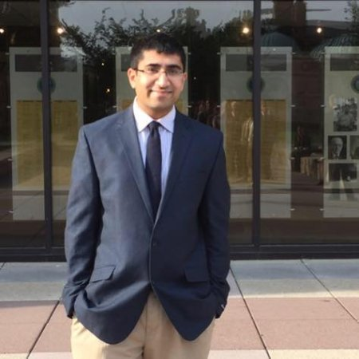

About Me

Welcome!
A brief history about myself In my free time, my hobbies include watching sports, reading, playing tennis, and coding! My favorite sport to watch is basketball. Go Magic!
Additionaly I love to watch movies and cook.
Please feel free to browse and look at my porfolio-gallery where you can see my projects. If you like to get a hold of me, navigate to my contact page to send me an email.
"Optimism is the faith that leads to achievement. Nothing can be done without hope and confidence."-Helen Keller
Click here to view my resume
I was born in Mumbai,India. Shortly after, I moved to Florida where I grew up in the city of Lake Mary.
After graduating high school, I moved to Tampa, Florida where I attended the University of South Florida.
During my time at the University of South Florida, I pursued a B.S Degree in Environmental Science and Policy as well as a M.A degree in Global Sustainability. I concentrated in Water and Energy management during my masters program.
Post-graduation I accepted a job with an environmental consulting firm. Down the line I hope to pivot into the wonderful technology industry and become a full-stack web developer.
Connect with Me
-
 Linkedln
Linkedln
-
 Stackoverflow
Stackoverflow
-
 GitHub
GitHub